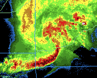
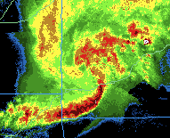

Ryan Sobash
120 David L. Boren Blvd, Suite 4340B, Norman, OK 73072
rsobash at ou dot edu
I'm currently a post-doctoral research associate at the Cooperative Institute for Mesoscale Meteorological Studies at the University of Oklahoma.
Research Interests: Improving forecasts of extreme, high-impact weather, such as severe convection and its associated hazards (tornadoes, high winds, large hail). To do so, I primarily utilize novel data assimilation techniques and ensemble forecasting methods.
- Research summary
-
An accurate three-dimensional convective-scale analysis is a prerequisite to produce skillful forecasts of convection. I'm currently studying methods to assimilate WSR-88D radar data and mesoscale surface data into numerical models to produce such analyses. This is a goal of the NOAA Warn-on-forecast project which funds my current work.
To produce the analyses, I'm using an ensemble Kalman filter-based data assimilation package (provided by the NCAR Data Assimilation Research Testbed), combined with the Weather and Research Forecasting (WRF) model. My present work involves simulating events that grow upscale from initially isolated convection into larger systems, such as mesoscale convective systems. These systems can produce a variety of severe weather over extensive areas. I've used both idealized and real-data experiments to understand the sensitivities of analyses and forecasts to various components of EnKF data assimilation systems (e.g. covariance localization). I'm also interested in studying the effects of model error, which regularly degrades analysis and forecast quality.
My M.S. work investigated a technique to produce severe weather guidance by identifying severe convection in convection-allowing WRF-model output. Along with my interest in severe convective weather, I've also studied lake-effect snow in the New York State Finger Lakes region.
- Education
- Ph. D. - University of Oklahoma, School of Meteorology, Adviser: Dr. David Stensrud, June 2010 - December 2013
- M.S. - University of Oklahoma, School of Meteorology, Adviser: Dr. Jack Kain, September 2006 - May 2010
- B.S. - The Pennsylvania State University, Major: Meteorology, September 2002 - May 2006
- Refereed Publications
- Sobash, R., A. and D. J. Stensrud, 2013: The impact of covariance localization for radar data on enKF analyses of a developing MCS: Observing system simulation experiments. Mon. Wea. Rev., 141, 3691-3709.
- Sobash, R. A., J. S. Kain, D. R. Bright, A. R. Dean, M. C. Coniglio, and S. J. Weiss, 2011: Probabilistic forecast guidance for severe thunderstorms based on the identification of extreme phenomena in convection-allowing model forecasts. Wea. and Forecasting, 26, 714-728.
- Kain, J. S., S. R. Dembek, S. J. Weiss, J. L. Case, J. J. Levit, and R. A. Sobash, 2010: Extracting Unique Information from High Resolution Forecast Models: Monitoring Selected Fields and Phenomena Every Time Step. Wea. and Forecasting, 25, 1536-1542.
- Laird, N., R. Sobash, and N. Hodas, 2010: Climatological Conditions of Lake-Effect Precipitation Events associated with the New York State Finger Lakes.
J. Appl. Meteor. Climatol., 49, 1052-1062.
- Laird, N., R. Sobash, and N. Hodas, 2009: The Frequency and Characteristics of Lake-Effect Precipitation Events Associated with the New York State Finger Lakes. J. Appl. Meteor. Climatol., 48, 873-886.
- Conference Presentations and Preprints
- Koch S., and D. J. Stensrud, M. Xue, L. J. Wicker, N. Yussouf, R. A. Sobash, and C. K. Potvin, 2013: Observing system simulation experiment (OSSE) research on convective storms at the National Weather Center. 17th Conference on Integrated Observing and Assimilation Systems for the Atmosphere, Oceans, and Land Surface, Austin, TX, Amer. Meteor. Soc.
- Sobash, R. A. and D. J. Stensrud, 2012: Convective-scale EnKF analyses of a developing convective system: Results from OSSEs and real-data experiments. 26th Conference on Severe Local Storms, Nashville, TN, Amer. Meteor. Soc.
- Kain, J. S., and I.L. Jirak, S. J. Weiss, A. J. Clark, M. C. Coniglio, J. Correia Jr., A. R. Dean, P. T. Marsh, C. J. Melick, S. D. Miller Jr., R. Sobash, M. Xue, F. Kong, K. W. Thomas, V. Lakshmanan, D. A. Imy, and S. R. Dembek, 2012: An Overview of the 2012 NOAA Hazardous Weather Testbed Spring Forecasting Experiment, 26th Conference on Severe Local Storms, Nashville, TN
- Miller, S. D. Jr., and J. S. Kain, P. T. Marsh, A. J. Clark, M. C. Coniglio, V. Lakshmanan, J. Correia, Jr., D. A. Imy, S. R. Dembek, I. L. Jirak, S. J. Weiss, A. R. Dean, C. J. Melick, R. Sobash, M. Xue, F. Kong, and K. W. Thomas, 2012: Assessment of timing and coverage of convective during the 2012 NOAA Hazardous Weather Testbed Spring Forecasting Experiment, 26th Conference on Severe Local Storms, Nashville, TN, Amer. Meteor. Soc.
- Sobash, R., J. S. Kain, D. R. Bright, A. R. Dean, M. C. Coniglio, S. J. Weiss, and J. J. Levit, 2009: Forecast guidance for severe thunderstorms based on identification of extreme phenomena in convection-allowing model forecasts. Preprints, 23rd Conf. on Weather Analysis and Forecasting, Omaha, NE, Amer. Meteor. Soc.
- Sobash, R., D. R. Bright, A. R. Dean, J. S. Kain, M. Coniglio, S. J. Weiss, and J. J. Levit, 2008: Severe storm forecast guidance based on explicit identification of convective phenomena in WRF-model forecasts. Preprints, 24th Conf. on Severe Local Storms, Savannah, GA, Amer. Meteor. Soc.
- Kain, J. S., S. J. Weiss, S. R. Dembek, J. J. Levit, D. R. Bright, J. L. Case, M. Coniglio, A. R. Dean, R. Sobash, and C. S. Schwartz, 2008: Severe-weather forecast guidance from the first generation of large domain convection-allowing models: Challenges and opportunities. Preprints, 24th Conf. on Severe Local Storms, Savannah, GA, Amer. Meteor. Soc.
- Laird, N. F., J. Desrochers, N. Hodas, M. Payer, and R. Sobash, 2007: Lake-Effect Precipitation Bands associated with Small Lakes. Preprints, 12th Conference on Mesoscale Processes, Waterville Valley, NH, Amer. Meteor. Soc.
- Sobash, R. A., H. Carr, and N. F. Laird, 2005: An Investigation of New York State Finger Lakes Snow Band Events. Preprints, 11th Conference on Mesoscale Processes, Albuquerque, NM, Amer. Meteor. Soc.
- Other Presentations
- "OSSEs of a Derecho-Producing Convective System: Sensitivity to covariance localization." Warn-on-Forecast workshop poster, 8 February 2012
- "Using Convection-Allowing Models to Produce Forecast Guidance For Severe Thunderstorm Hazards via a Surrogate-Severe Approach." 25th Conference on Severe Local Storms, 14 October 2010
- "Severe storm forecast guidance based on explicit identification of convective phenomena in WRF-model forecasts." OU School of Meteorology Thesis Defense, 10 March 2010
- "Extracting probabilistic severe weather guidance from convection-allowing model forecasts." OU School of Meteorology Convection/NWP Seminar Series, 4 December 2009
Last Updated: 15 January 2014